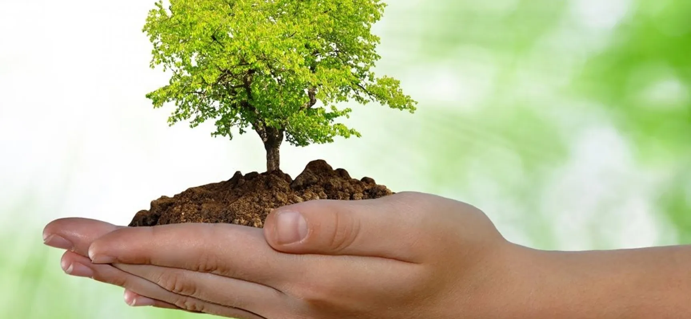
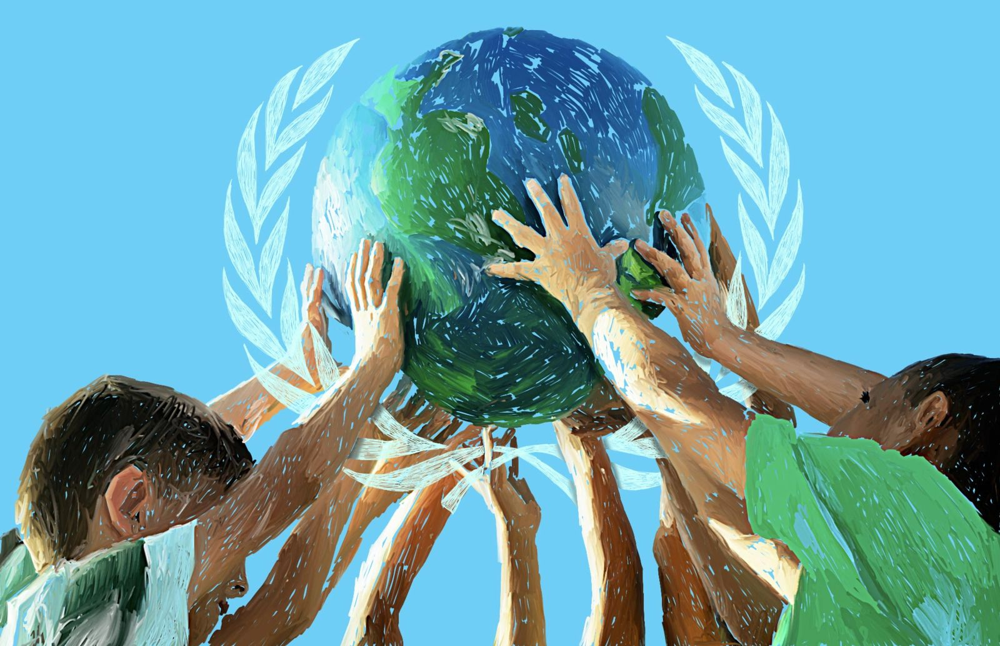

Inicio
Inicio

¿Quienes somos?
Ministerio de Medio Ambiente y Recursos
Naturales
El Ministerio de Medio Ambiente y Recursos Naturales promueve
activamente el respeto de los ecosistemas, difundiendo conocimientos
e informaciones a través de charlas, talleres y dinámicas educativas
lúdicas dirigidas a elevar el nivel de concientización ambiental de
la población dominicana.

¿Qué hacemos?
Nuestras funciones principales son:
Elaborar la política nacional sobre medio ambiente y recursos
naturales del país.
Administrar los recursos naturales de dominio del Estado que
les hayan sido asignados.
Velar por la preservación, protección y uso sostenible del
medio ambiente y los recursos naturales.
 Educación ambiental
Ofrecemos educación sobre el medio ambiente a la población
dominicana
A través de la Dirección de Educación Ambiental, creada a partir de
la Ley General sobre Medio Ambiente y Recursos Naturales, No.64-00,
y la Ley sobre Educación y Comunicación Ambiental, No.94-20,
ofrecemos programas de educación ambiental no formal e informal, en
coordinación con instituciones públicas, privadas, organizaciones no
gubernamentales y entidades comunitarias.
Educación ambiental
Ofrecemos educación sobre el medio ambiente a la población
dominicana
A través de la Dirección de Educación Ambiental, creada a partir de
la Ley General sobre Medio Ambiente y Recursos Naturales, No.64-00,
y la Ley sobre Educación y Comunicación Ambiental, No.94-20,
ofrecemos programas de educación ambiental no formal e informal, en
coordinación con instituciones públicas, privadas, organizaciones no
gubernamentales y entidades comunitarias.